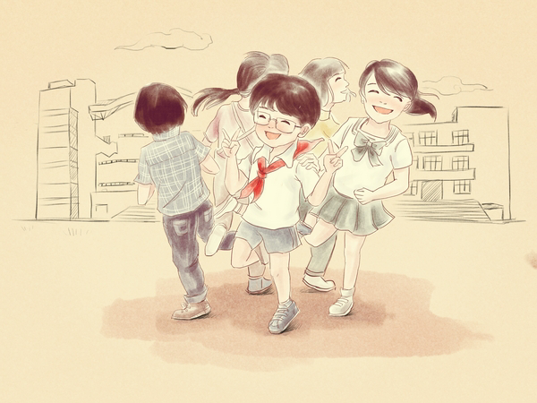

关于我
一、我为什么选择了前端
首先，说说我是如何转行做前端的。
作为一个实实在在的80后青年（其实很多时候只是自嘲一下）。 在时光已经无数次的从眼前消失的时候，内心浮现的更多的不是放弃，或者是按部就班，又或许是将就这样的名词。 更多的是继续寻找新的突破，走向更加的可以成长的道路。即使一直在寻找，却还未发现。
去年在经历了了婚姻的幸福和学习的乐趣之后。我彻底的走上了前端的道路。至于为什么学习。 因为在这里，你的付出和努力是看得见的。你的每一次的学习，每一次的练习，都会在你的工作中给予你回报。 而且你可以通过你的不断的努力和重复，达到你想要成长到的地步。这一点非常的重要。 这是你可以通过不断的重复，然后就可以掌握的一门技能。相对好说，但是态度也很重要。
二、不断的学习
在学习的道路上，不断的学习，而且要向那些大牛学习。也要勤于向身边的每一个人请教，在不断的讨论和学习的过程当中。技能不断的提高。从开始的静态页面，到javascript，然后到交互，到nodeJs。一路的向前不仅代码的能力的有所提高，而且自己的视野也在开阔。解决问题的能力明显的增强了。所以，要感谢所有的人。
三、关于我的网站
至于这个网站，也是在自己学习的过程当中，不断的积累的过程。希望在开发的过程当中，一方面的对自己有所提升。也希望看到的人，能够一起的交流技术。共同的成长。特别是那些还刚刚转行进入这个行业的年轻人，看到我的网站的时候，会有一点点的鼓励。能够坚持下去。才会看到前面会更好。
四、关于我
只是一个普普通通的80后，只因为一个不安分的心，总是想折腾折腾。不喜欢华丽的，太过浮夸的东西。只想好好的过好每一天。如果有可能的话，会去帮助更多的人学会编程。毕竟这个是未来每一个人都必须掌握的技能。
至于爱好方面。平时就喜欢打打羽毛球，或者在健身房度过。喜欢挥汗如雨的感觉，可以放下一切，尽情的享受。
在以后的日子里，希望能够继续的完善自己的网站。和更多的人互动起来。也会分享更多的使用的文章。推荐一些微信公众号。对看到的人有所帮助。